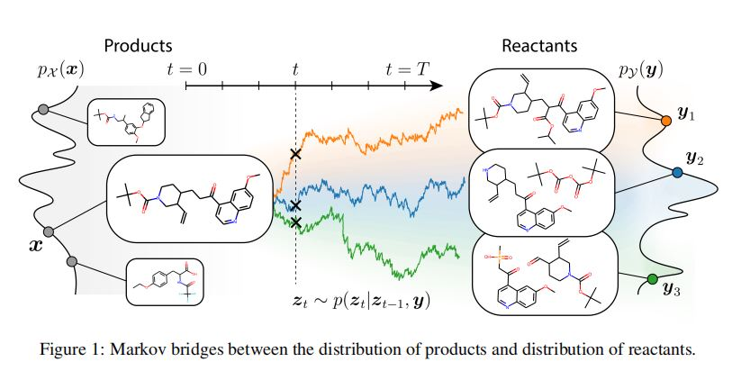
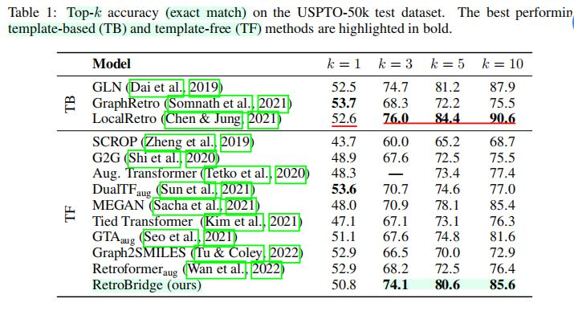
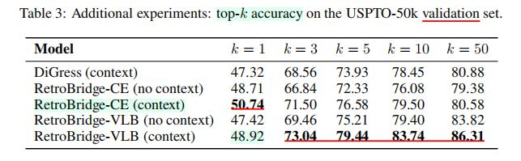
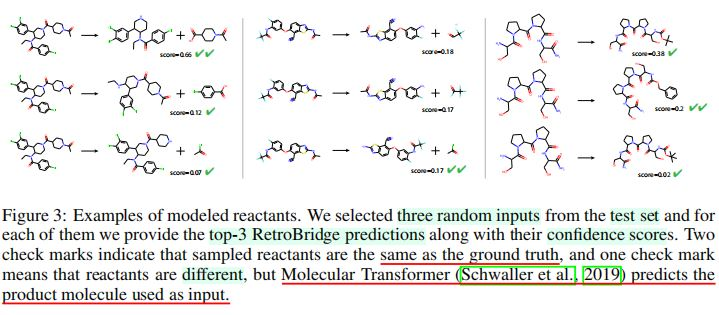

RetroBridge
论文标题：RetroBridge: Modeling Retrosynthesis with Markov Bridges
发表期刊：ICLR 2024(Spotlight)
代码链接：github
Abstract
1.单步逆合成问题
- 目标：寻找可购买的起始反应物，设计出通往目标分子的多步反应途径。
- 单步逆合成预测目标：准确预测给定目标分子时，可能用于合成目标分子的前体分子，同时需要进行置信度估计，以指导启发式搜索算法。
- 单步逆合成建模：作者把单步逆合成问题建模为离散状态空间中的分布学习问题。
2.马尔可夫桥模型(Markov Bridge Model)的引入
- 马尔可夫桥模型（
Markov Bridge Model）：一种生成式框架，旨在通过有限数量的匹配数据点对，对两个难以处理的离散分布的依赖关系进行近似。 - 理念：基于“马尔可夫桥”概念，即两端固定的马尔可夫过程。
- 模型与扩散方法的区别：马尔可夫桥模型不需要借助易于处理的噪声分布作为采样代理，而是直接对输入产物分子进行处理，将其视为来自难以处理的先验分布的样本。
3.使用Markov Bridge Model解决单步逆合成问题
- 引入
RetroBridge——一种基于Markov Bridge Model的无模板逆合成方法。 - 在标准评估
baseline上取得SOTA结果。
1 Introduction
1.研究背景
- 计算机与机器学习方法在全新(
in silico)药物设计领域，展现出巨大潜力，作为一种更为经济、高效的替代方案，相较于实验性的高通量筛选方法（Thomas等人，2023年），能够设计出具有理想性质的分子。 - 计算模拟结果表明，生成的分子具有预测数值较高的靶标结合亲和力，以及其他有利特性，但迄今为止，对于这些分子的合成可行性关注度还相对较低（
Stanley & Segler, 2023）。 - 对于实验室测试而言，需要为新设计的分子探索合成路径，这是一个极具挑战性和耗时的过程。
2.逆合成规划任务
- 提出实验室中可以验证和优化的反应步骤或完整途径，以解决新设计分子的合成路径问题。
- 单步逆合成：针对给定的目标分子，预测其前体分子(
percursor molecule)。 - 多步逆合成：递归应用单步逆合成方法，逐步将产物分子分解成越来越简单的中间体，并最终追踪到可获得的初始分子。
3.逆合成任务的建模方式
- 大多数逆合成研究
- 采用判别式框架

- 采用判别式框架
- 本文观点
- 将逆合成任务视为一个条件分布学习问题（图
1） - 视为条件分布学习问题的优点
- 能够建模不确定性，以生成新颖的、多样化的逆合成路径。
- 条件分布的概率形式，反映了同一个产物分子往往可以通过不同的反应物和试剂组合进行合成的事实。
- 将逆合成任务视为一个条件分布学习问题（图
4.现有生成式方法对逆合成任务的适用性
- 现有生成式方法：扩散模型和其他基于分数(
score-based)、基于流(flow-based)的生成方法。 - 适用性：不能自然地适用于逆合成问题的表达形式。
- 上述模型的目的：用于近似单一的难以处理的数据分布。
- 上述模型的一般方法
- 从一个简单的先验分布中采样初始噪声
- 将噪声映射到遵循复杂目标分布的数据点上
5.作者认为的逆合成学习目标
- 目标：学习两个难以处理分布之间的依赖关系，而非某个单一的难以处理的分布。
- 原因
- 可以使用原始无条件生成模型，在采样过程中对相关上下文进行条件化，并持续从先验噪声中采样，以实现两个分布依赖关系的学习。
- 但本文实验表明：近似两个离散分布之间的依赖关系时，直接应用原始无条件生成模型不是最好的选择。
6.RetroBridge方法的提出
- 一种无模板、生成式逆合成方法。
- 将产物空间、反应物空间之间的依赖关系，建模为一个随机过程。
- 随机过程受到数据点起始和结束的约束。
- 引入马尔可夫桥模型——一个生成模型，通过有限的匹配数据点对(
coupled data points)，学习两个难以处理的离散分布之间的依赖关系。 - 输入：产物分子。
- 模型：对从一个给定产物开始，并在遵循反应物分布的数据点结束的马尔可夫桥的轨迹进行建模。
7.RetroBridge方法性能的评估
- 不确定性得分
- 针对采样得到的反应物图，利用
RetroBridge的概率性质，基于每个样本衡量不确定性得分。
- 针对采样得到的反应物图，利用
- 逆合成实验结果
RetroBridge在标准逆合成benchmark中，取得具有竞争力的结果。
- 与
GraphDiffusion的对比- 将
RetroBridge与最先进的图扩散模型DiGress进行比较。 - 结果：在定量和定性层面上证明，本文提出的马尔可夫桥模型更适用于需要映射两个难以处理的离散分布的任务。
- 将
8.贡献总结
- 贡献一
- 引入马尔可夫桥模型(
Markov Bridge Model)，以通过有限数量的匹配数据点对(coupled data points)，近似两个难以处理的离散分布之间的概率依赖关系。
- 引入马尔可夫桥模型(
- 贡献二
- 在学习两个难以处理(
intractable)离散分布之间依赖关系的背景下，展示了Markov Bridge Model相比于扩散模型的优越性。
- 在学习两个难以处理(
- 贡献三
- 提出
RetroBridge——首个用于逆合成建模的Markov Bridge Model、一种无模板的单步逆合成预测方法，在标准benchmark上实现了SOTA性能。
- 提出
2 Related Work
1.扩散模型
- 一类强大、有效、基于分数的生成方法。
- 在制药的许多领域取得了令人瞩目的成果
- 蛋白质设计
- 小分子生成
- 分子对接
- 过渡态分子结构采样
- 大多数模型为连续数据域设计；一些方法应用于离散数据，特别是离散图结构。
- 目前尚未有扩散模型被应用于模拟化学反应、恢复逆合成路径。
2.Schrodinger桥问题
- 问题定义
- 给定两个分布，以及它们之间的参考随机过程，解决
Schrodinger桥（Schrodinger Bridge）问题相当于在路径空间上根据Kullback-Leibler散度，找到与参考随机过程最接近的随机过程。
- 给定两个分布，以及它们之间的参考随机过程，解决
- 最近大多数方法的共性
- 在无条件生成建模的背景下，应用
Schrodinger Bridge形式化
- 在无条件生成建模的背景下，应用
- 少数工作
- 通过对两个连续分布中的匹配样本(
coupled samples)进行训练，以近似参考随机过程。
- 通过对两个连续分布中的匹配样本(
- 目前尚无针对类别分布进行处理的方法，该问题正是本文工作的研究主题。
3.逆合成建模
- 方法分类
- 基于模板的方法
- 无模板方法
- 基于模板的方法
- 依赖于预定义的特定反应模板或离去基团集合
- [注]：由于半模板方法依赖于离去基团集合，此处将半模板方法归类为基于模板的方法。
- 无模板方法
- 更加灵活，因此能够探索新的反应途径。
- 逆合成预测中常用的两种数据表示方法
- 符号表示法
SMILES - 分子图
- 符号表示法
- 逆合成模型
- 语言模型
- 处理
SMILES - 部分语言模型在规模更大的数据集上进行预训练
- 无模板方法：根据序列到序列翻译问题的本质，所有这些方法都是无模板的。
- 处理
- 基于图的方法
- 基于模板的方法
GLNGraphRetroLocalRetro
- 无模板方法
G2GMEGAN
- 同时利用图和
SMILES表示的方法（无模板方法）GTAGraph2SMILESRetroformer
- 基于模板的方法
- 本文提出的方法所属类型
- 一种无模板、基于图的方法。
3 Retro Bridge
- 逆合成任务建模
- 作者将逆合成任务视为：在产物\(p_{X}\)和反应物\(p_{Y}\)的离散取值分布之间，建模一个随机过程的生成式任务。
- 产物分布、反应物分布均难以计算，由有限个匹配样本对\(\{(x_i, y_i)\}_{i = 1}^{D}\)进行表示。
- 其中，\(x_i \sim p_{X}(x_i)\)是一个产物分子，\(y_i \sim p_{Y}(y_i)\)是与产物分子相对应的反应物集合。
- 产物分布、反应物分布的联合分布\(\int p_{X, Y}(x, y)dx = p_{Y}(y)\)：反映了分布\(p_{X}, p_{Y}\)之间的关联。
- 联合分布：难以计算，仅能通过有限个离散样本对\(\{(x_i, y_i)\}_{i = 1}^{D}\)进行访问。
3.1 Markov Bridge Model
1.Markov Bridge的定义与作用
- 作用
- 对离散空间\(X\)与\(Y\)之间的关联性进行建模。
- 定义
- 一个
Markov随机过程，在起始、终止处固定到特定的数据点。
- 一个
- 数学表达
- 给定一个样本对\((x, y) \sim p_{X, Y}(x, y)\)，以及一系列时间步\(t = 0, 1, \cdots, T\)，相应的
Markov Bridge是一系列随机变量\((z_t)_{t = 0}^{T}\)，满足以下性质：- 起始于数据点\(x\)，即\(z_0 = x\)。
- 满足
Markov性质，即：
\(p(z_t|z_0, z_1, \cdots, z_{t - 1}, y) = p(z_t | z_{t - 1}, y)\cdots (1)\) - 过程终止时固定于数据点\(y\)，通过下列额外约束实现：
\(p(z_T = y|z_{T - 1}, y) = 1 \cdots (2)\)
- 给定一个样本对\((x, y) \sim p_{X, Y}(x, y)\)，以及一系列时间步\(t = 0, 1, \cdots, T\)，相应的
2.Markov Bridge的建模
- 数据表示
- \(p_{X}, p_{Y}\)均具有有限的离散类别(
categorial)，并带有一个有限样本空间\(\{1, \cdots, K \}\)，则将数据点表示为\(K\)维独热向量\(x, y, z_{t} \in \mathbb{R}^{K}\)。
- \(p_{X}, p_{Y}\)均具有有限的离散类别(
Markov Bridge的建模- 为了建模公式\((1)(2)\)定义的
Markov Bridge，引入一系列变换矩阵\(Q_{0}, Q_{1}, \cdots, Q_{T - 1} \in \mathbb{R}^{K \times K}\)，其递归定义为：
\(Q_{t} := Q_t(y) = \alpha_{t}I_{k} + (1 - \alpha_t)y1_{K}^T \cdots(3)\) - 其中，\(I_{K}\)为\(K \times {K}\)的单位矩阵，\(1_{K}\)是一个\(K\)维全\(1\)向量，\(\alpha_{t}\)是调度参数，从\(\alpha_0 = 1\)到\(\alpha_{T - 1} = 0\)变化。
- 令\(alpha_{T - 1} = 0\)，即保证了约束\((2)\)成立。
- 为了建模公式\((1)(2)\)定义的
- 转移概率
- 转移概率\((1)\)可以写作如下形式：
\(p(z_{t + 1} | z_{t}, y) = Cat(z_{t + 1}; Q_t z_t) \cdots (4)\) - 上式中，\(Cat(\cdot ; p)\)是分类分布(
categorial distribution)，根据\(p\)给出条件概率。
- 转移概率\((1)\)可以写作如下形式：
Markov Bridge的学习- 使用有限样本集合\(\{(x_i, y_i)\}_{i = 1}^{D} \sim p_{X, Y}\)，模型目标是：学习一个满足约束\((1)(2)\)的
Markov Bridge，从而能够在仅提供\(x\)的情况下，对\(y\)进行采样。 - 为了实现上述目的，使用神经网络近似计算得到的\(\hat{y}\)对\(y\)进行替代：
\(\hat{y} = \phi_{\theta}(z_t, t) \cdots (5)\) - 据此定义近似转移核：
\(q_{\theta}(z_{t + 1} | z_t) = Cat(z_{t + 1}; Q_{t}(\hat{y})z_t) \cdots (6)\)
- 使用有限样本集合\(\{(x_i, y_i)\}_{i = 1}^{D} \sim p_{X, Y}\)，模型目标是：学习一个满足约束\((1)(2)\)的
- 模型训练目标
- 训练神经网络\(\phi_{\theta}\)的方法：最大化对数似然\(logq_{\theta}(y | x)\)的一个下界。（证明：见附录
Appendix A.1） - 该下界的封闭形式如下：
\(logq_{\theta} (y | x) \geq -T \cdot \mathbb{E_{t \sim U(0, \cdots, T - 1)}} \mathbb{E_{x_{t} \sim p(z_t | x, y)}}D_{KL}(p(z_{t + 1} | z_t, y) || q_{\theta}(z_{t + 1} | z_{t})) \cdots (7)\)
- 训练神经网络\(\phi_{\theta}\)的方法：最大化对数似然\(logq_{\theta}(y | x)\)的一个下界。（证明：见附录
4 Results
4.1 Experimental Setup
1.数据集
- 使用
USPTO-50k数据集，包含美国专利文献中的5万个反应。 - 使用
Dai et al. (2019)提供的标准训练/验证/测试分割。 - 数据集存在捷径，即在近
75%的情况下，原子映射为1的产物原子都是受到变换的原子的一部分。 - 模型不依赖于图节点顺序，但还是使用了带有规范
SMILES的数据集版本。 - 将
SMILES读取并转换为图之后，会随机排列图节点。
2.Baseline
- 基于模板的方法
GLNLocalRetroGraphRetro
- 无模板方法
MEGANG2GAugmented TransformerSCROPTied TransformerGTADualTFGraph2SMILESRetroformer
GLN结果- 使用公开可用的代码和模型权重，获得
GLN的预测结果。
- 使用公开可用的代码和模型权重，获得
LocalRetro结果- 使用作者提供的
LocalRetro最新预测结果。
- 使用作者提供的
MEGAN的重新训练与评估MEGAN最初在随机数据分割上进行训练和评估。- 作者对
MEGAN进行了重新训练并评估。
RetroBridge与图扩散模型的比较- 作者将
RetroBridge与最先进的离散图扩散模型DiGress，以及基于图Transformer架构的无模板baseline进行了比较。
- 作者将
3.评估
Top-k精确匹配准确率- 对于每个输入产物，采样\(100\)组反应物，并报告
Top-k精确匹配准确率（\(k = 1, 3, 5, 10\)）。 - 衡量方法在
Top-k样本中成功产生正确反应物集合的比例。
- 对于每个输入产物，采样\(100\)组反应物，并报告
- 往返(
round-trip)准确率和覆盖率- 对于每个输入产物产生的
Top-k样本，作者运行正向反应预测模型Molecular Transformer，并报告往返准确率和覆盖率。 - 往返准确率
- 所有预测中正确预测的反应物的百分比。
- 反应物被认为正确的条件
- 预测反应物与实际反应物匹配
- 反应物可以逆向生成输入产物
- 往返覆盖率
- 衡量根据往返准确率定义，在
Top-k预测中是否至少有一个正确的预测。
- 衡量根据往返准确率定义，在
- 往返准确率、覆盖率反映的事实：一个产物可以映射到多个不同的有效反应物集合。
- 对于每个输入产物产生的
4.2 Neural Network
- 图
transformer网络：近似Markov Bridge的最终状态。 - 分子：表示为全连接图。
- 节点特征：经过独热编码的原子类型。（包含
16种原子类型，以及额外的dummy类型） - 边特征：共价键类型（
3种键类型，以及额外的none类型）
- 节点特征：经过独热编码的原子类型。（包含
- 计算了多种与图相关的节点属性和全局属性
- 环路的数量
- 谱图特征(
spectral graph features)
4.3 Retrosynthesis Modeling
- 实验数据
- 实验对象：
RetroBridge，以及其他SOTA方法。 - 数据集：
USPTO-50k测试集 - 评估指标：
top-k准确率、往返准确率。
- 实验对象：
- 表
1——精确匹配准确率
 RetroBridge的精确匹配准确率top-1准确率上：表现出与SOTA水平相当的性能。- 所有其他
top-k准确率：超越其他无模板方法。
- 评价指标
- 观点：模型在
top-5准确率上的表现是与任务关系最密切的指标。 - 解释：这一数值最接近于多步逆合成规划树通常期望或希望达到的宽度。
- 实验结果：模型对
top-5准确率进行了提升。
- 观点：模型在
- 无模板(
template-free)方法与基于模板的(template-based)方法- 为保证完整性，将
RetroBridge的精确匹配准确率与无模板方法、基于模板的方法均进行比较。 - 观点：无模板建模是一项更具挑战性的任务，且
RetroBridge属于无模板方法，因此本文主要关注无模板方法。
- 为保证完整性，将
- 表
2——通过Molecular Transformer获得的往返准确率
- 往返准确率
- 评价意义
- 精确匹配准确率不能完全反映产物空间、反应物空间之间的依赖关系。
- 采用往返准确率，补充测量前向反应预测的往返结果，可以弥补上述问题。
- 评价对象
- 基于模板的方法
GLN, LocalRetro - 无模板方法
GraphSMILES, Retroformer - 重新训练的无模板方法
MEGAN
- 基于模板的方法
RetroBridge实验结果- 与无模板方法对比：
RetroBridge明显优于无模板baseline。 - 与
SOTA基于模板的方法对比：尽管无模板设置的难度要高得多，但RetroBridge在往返覆盖率、准确度方面也超过了SOTA基于模板的方法。
- 与无模板方法对比：
- 实验结论
- 实验结果支持假设：给定一个初始产物分子，在缺乏特定反应物集合的情况下，应该在一个概率框架下对逆合成进行建模。
- 评价意义
4.4 Additional Experiments
RetroBridge与扩散方法、one-shot图Transformer的比较- 比较对象一：
DiGress的朴素修改版本(naive adaptation)。- 原因：可以认为，该
DiGress修改版本是最具有可比性的基于扩散的逆合成方法。
- 原因：可以认为，该
- 比较对象二：
one-shot预测反应物的图Transformer。
- 比较对象一：
- 输入产物分子作为每个采样步骤(
sampling step)的上下文(context)的作用研究- 不使用上下文(
context)的模型：
\(\hat{y} = \phi_{\theta}(z_t, t) \cdots (5)\) - 使用上下文(
context)的模型的预测公式：
\(\hat{y} = \phi_{\theta}(z_t, x, t) \cdots\)
- 不使用上下文(
- 损失函数
- 交叉熵(
CE, Cross Entropy)损失
\(L_{CE}(\theta) = T \cdot \mathbb{E}_{t \sim U(0, \cdots, T - 1)}\mathbb{E}_{\mathbf{z}_{t}, \mathbf{z}_{T} \sim p}CrossEntropy(\mathbf{z}_{T}, \phi_{\theta}(\mathbf{z}_{t}, t)) \cdots (13)\) - 变分下界(
VLB, Variational Lower Bound)损失
\(logq_{\theta} (y | x) \geq -T \cdot \mathbb{E_{t \sim U(0, \cdots, T - 1)}} \mathbb{E_{x_{t} \sim p(z_t | x, y)}}D_{KL}(p(z_{t + 1} | z_t, y) || q_{\theta}(z_{t + 1} | z_{t})) \cdots (7)\)
- 交叉熵(
- 表
3——关于是否使用上下文、损失函数种类的对比实验
 - 超参数设置
- 在所有实验中，均采用相同的神经网络结构、相同的超参数集合。
- 实验结论
- 结论一——迭代采样的重要性
- 扩散模型、
Markov Bridge模型中的迭代采样步骤，对于解决两个图分布之间的映射问题至关重要。 - 训练相当时间的
Graph Transformer：未能成功恢复任何反应物。
- 扩散模型、
- 解释
- 训练任务极其具有挑战性，原因是某个化学键或原子类型的错误预测，对于评估精确度是极其有害(
detrimental)的。 one-shot基于图的逆合成预测模型- 所有
one-shot基于图的逆合成预测模型均属于基于模板的方法。 - 这些网络并不直接预测整个反应物集合，而是解决简单许多的任务（如：图编辑预测(
prediction of graph edits)）。 - 为了获得最终反应物集合，图编辑预测需要被额外组件进行处理，该组件依赖于预定义的反应模板或离去基团字典。
- 所有
- 训练任务极其具有挑战性，原因是某个化学键或原子类型的错误预测，对于评估精确度是极其有害(
- 结论二——
Markov Bridge比扩散模型更适用于两个离散图分布的映射- 表
3表明：在所有指标上，RetroBridge均优于带上下文的DiGress。 - 若将输入产物作为上下文，则
DiGress无法预测出任何反应物。 - 结果表明：与扩散模型相比，
Markov Bridge框架能够更自然地捕捉到任务的底层架构(underlying structure)。 - 扩散模型：将采样的噪声映射到反应物，仅能通过额外的上下文获得输入产物分子的信息。
Markov Bridge模型：采样管轨迹起始于难以处理的分布\(p_{X}(x) = \int p_{X, Y}(x, y)dy\)中的一个产物分子。
- 表
- 结论三——变分下界损失（公式
(7)）优于交叉熵损失 - 结论四——将输入产物分子作为采样上下文有利于提升
MarkovBridge性能- 将输入产物分子作为
RetroBridge在每个采样步骤的输入，有利于提升模型性能。 - 然而，即使没有额外上下文，
RetroBridge仍然获得了可观的精确度。
- 将输入产物分子作为
- 结论一——迭代采样的重要性
4.5 Examples

- 图3——USPTO-50K测试集随机采样的三个反应样本
- 对每个样本，提供了RetroBridge预测的top-3样本及其置信度。
- 在三个样本中，模型均正确地预测了反应物集合。
- 样本一：对于正确反应物的置信度较高，第一、第二预测的置信度分数差距较大。
- 样本二、样本三：模型对回答的自信程度不足，各top-k预测的置信度分数差距不明显。
5 Conclusion
1.工作总结
- 提出
Markov Bridge Model：一种新的生成式框架，适用于学习两个难以处理的离散值分布之间依赖关系。 - 将
Markov Bridge Model应用于逆合成预测问题，提出无模板方法RetroBridge，在常见的评估基准上实现SOTA性能。 - 实验结论：与扩散模型的直接改造相比，选择合适的概率建模框架，能对逆合成任务的性能产生积极影响。
2.未来工作展望
- 目的：解决
RetroBridge现有的一些局限性（这些局限性同样存在于其他类似的逆合成建模方法之中），使RetroBridge更适合实际应用。 - 研究方向一——引导生成过程趋向于某个特定的化合物集合
- 基于模板的逆合成规划方法存在许多限制，但可能仍被许多化学家所青睐，原因是更可能符合已有的反应物、试剂和反应类型集合。
- 因此，引导生成过程趋向于某个特定的化合物集合，是一种潜在的改进，将增强方法的实用性。
- 研究方向二——反应条件与试剂
- 化学反应强烈依赖于反应条件和试剂。
RetroBridge不直接预测此类条件，也不提供关于所需反应类型的明确信息，但可以朝着适应这种设置的方向调整。- 当前方法暂时难以提出完整的实验方案，但如果能在生成过程中考虑到反应条件和试剂的额外背景，则可能已经足以使方法得到更广泛的实际应用。
- 研究方向三——多步逆合成
- 大多数具有药学意义的反应途径包含多个步骤。
- 未来工作将结合
RetroBridge与现有的多步逆合成规划算法，以评估RetroBridge在多步设置下的性能。
3.Markov Bridge Model在其他领域的应用
Markov Bridge Model适用的场景特点- 需要通过有限数量的匹配数据点对(
coupled data points)，映射两个离散分布。
- 需要通过有限数量的匹配数据点对(
Markov Bridge Model可能的应用场景举例- 图像到图像的转换
- 图像修复
- 文本翻译
- 蛋白质结合物(
protein binder)设计